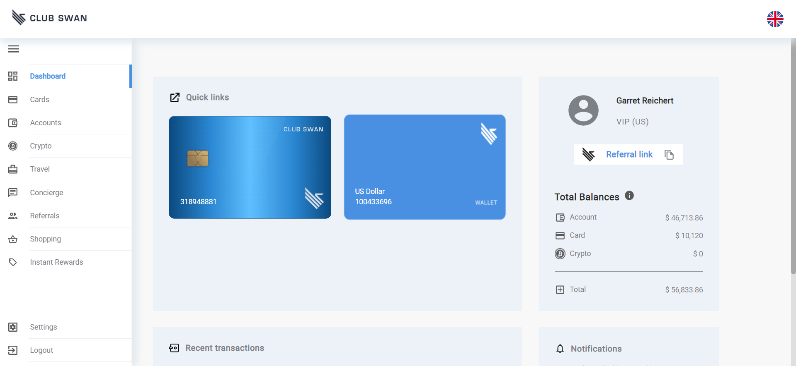
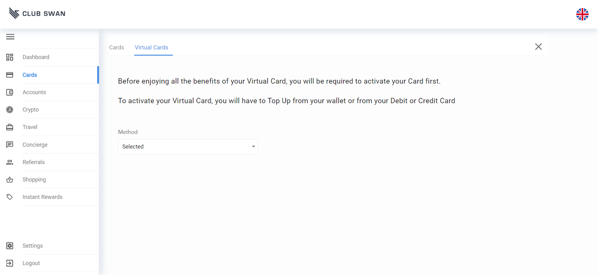

-
Test New Accounts Functionality
2:34:36 PM / 00:02:53:963 Fail
Test New Accounts Functionality
12.29.2022 2:34:36 PM 12.29.2022 2:37:30 PM 00:02:53:963 · #test-id=1FailVerify Topup popupGiven a valid urlWhen topup popup appearsAnd user inputs topup amountStep skippedAnd user click on checkboxStep skippedAnd click proceed buttonStep skippedAnd enter card details in payment informationStep skippedAnd user checks sucess message and press OkStep skippedThen user should see the Home pageStep skippedStepDefinations.LoginStep.takeScraenshotOnFailure(io.cucumber.java.Scenario)Verify Topup popupFailVerify virtual card creationGiven a valid urlWhen user clicks on cards on side menuAnd user clicks on virtual cards tabAnd user clicks on create virtual card buttonAnd user selects first cardStep skippedAnd user selects debit card for topup for activationStep skippedAnd user enters sending amount and click checkBoxStep skippedAnd user click on continue buttonStep skippedAnd user checks summary and press confirmStep skippedAnd enter card details in payment informationStep skippedAnd user enter otp and click activate buttonStep skippedAnd user checks sucess message and press OkStep skippedThen user should redirect back to virtual card pageStep skippedStepDefinations.LoginStep.takeScraenshotOnFailure(io.cucumber.java.Scenario)Verify virtual card creation
-
org.openqa.selenium.NoSuchElementException
2 tests
org.openqa.selenium.NoSuchElementException
2 failedStatus Timestamp TestName Fail 14:35:10 PM When topup popup appears Test New Accounts Functionality.Verify Topup popup.When topup popup appearsFail 14:36:54 PM And user clicks on create virtual card button Test New Accounts Functionality.Verify virtual card creation.And user clicks on create virtual card button
-
@tag1
1 tests
@tag1
1 failedStatus Timestamp TestName Fail 14:34:36 PM Verify Topup popup Test New Accounts Functionality.Verify Topup popup -
@tag2
1 tests
@tag2
1 failedStatus Timestamp TestName Fail 14:35:43 PM Verify virtual card creation Test New Accounts Functionality.Verify virtual card creation
Started
Dec 29, 2022 02:34:35 PM
Ended
Dec 29, 2022 02:37:30 PM
Features Passed
0
Features Failed
1
Features
Scenarios
Steps
Timeline
Tags
| Name | Passed | Failed | Skipped | Others | Passed % |
|---|---|---|---|---|---|
| @tag1 | 0 | 1 | 0 | 0 | 0% |
| @tag2 | 0 | 1 | 0 | 0 | 0% |